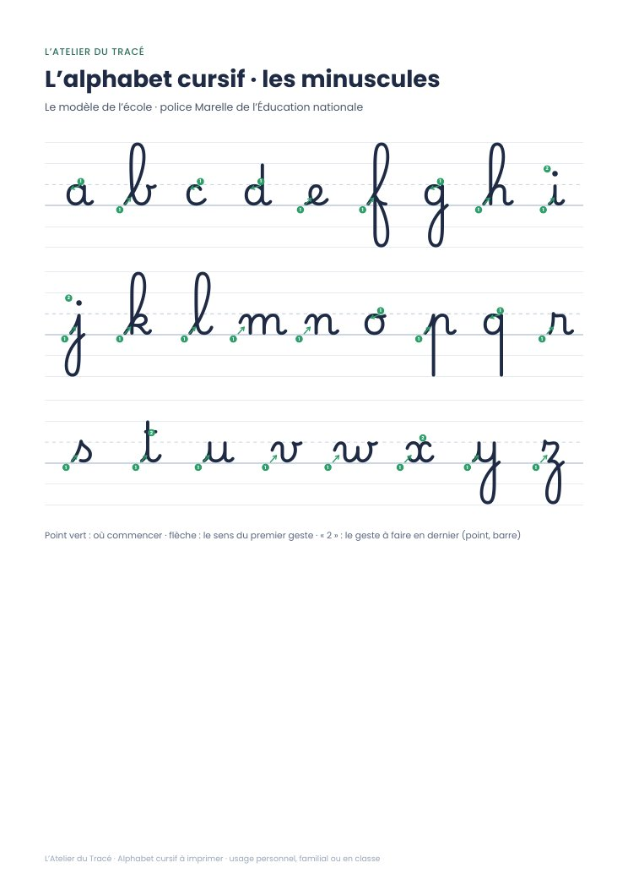
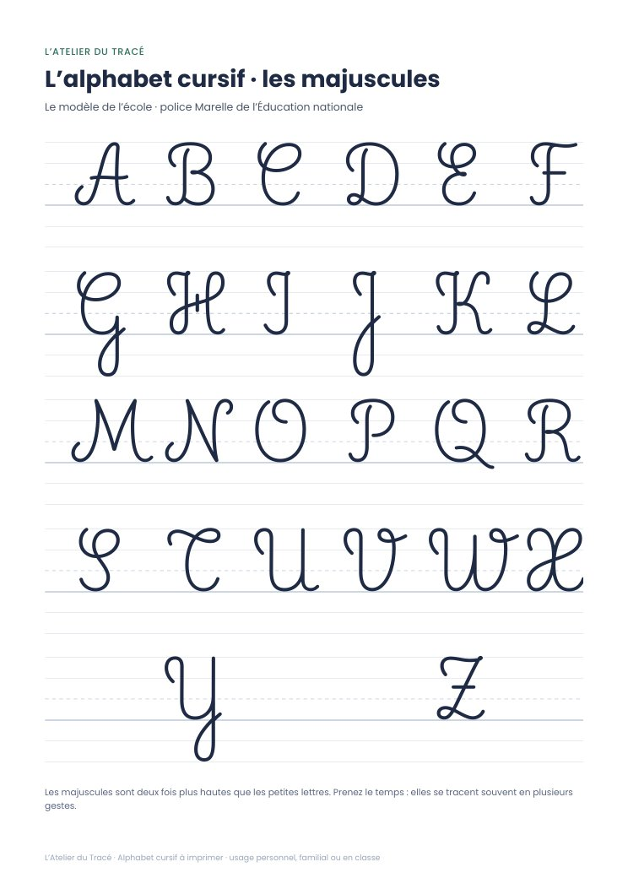
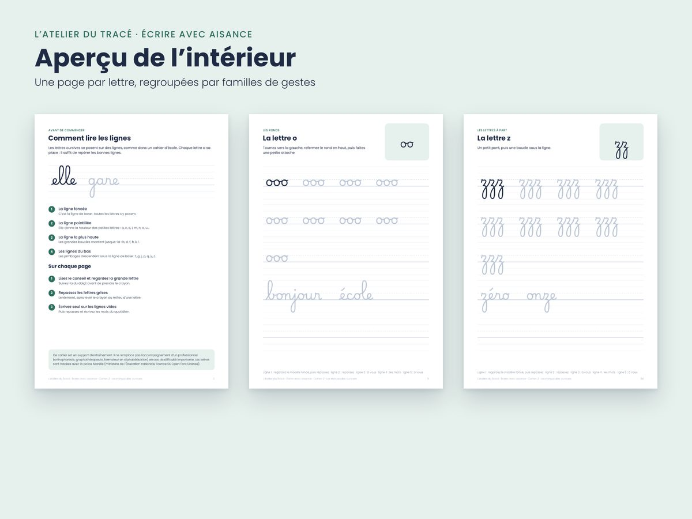

Gratuit · PDF à imprimer
L’alphabet cursif à imprimer
Les 26 lettres de l’écriture cursive, en minuscules et en majuscules, avec le modèle enseigné à l’école : la police Marelle, publiée par le ministère de l’Éducation nationale. Avec le point de départ et le sens de tracé de chaque minuscule, et des lignes pour s’entraîner.


8 pages A4 : les minuscules, les majuscules, puis 5 pages pour repasser et copier. À imprimer autant de fois que vous voulez, pour un usage personnel, familial ou en classe.
Comment tracer les lettres cursives
Quelques règles simples, utilisées à l’école :
- Les lettres rondes (a, c, d, g, o, q) commencent en haut, juste sous la ligne pointillée, et tournent vers la gauche.
- Les autres lettres commencent sur la ligne d’écriture, par un petit trait qui monte.
- Le point du i, la barre du t et les accents s’ajoutent à la fin, une fois le mot écrit.
- On ne lève le crayon que devant les lettres rondes et le x : partout ailleurs, les lettres s’enchaînent.
- Les majuscules sont deux fois plus hautes que les petites lettres et se tracent souvent en plusieurs gestes.
Les lettres par familles
Plutôt que dans l’ordre de l’alphabet, les lettres s’apprennent par familles de gestes, chaque nouvelle lettre s’appuyant sur un geste déjà connu :
| Les ronds | c, o, a, d, q, g |
| Les coupes | i, u, t |
| Les ponts | n, m, p |
| Les boucles | e, l, b, h, k, f |
| Les jambages | j, y |
| Les lettres à part | s, r, v, w, x, z |
Comment s’entraîner efficacement
- Regarder et dire le geste
Suivre la lettre du doigt depuis le point vert, en disant le mouvement à voix haute. - Repasser deux fois, pas plus
Juste pour que la main sente le mouvement. - Copier, puis écrire de mémoire
Modèle caché : c’est ce qui fait vraiment progresser.
Pourquoi cette méthode ? Ce que dit la recherche.
Pour aller plus loin
Une page par lettre, des mots à écrire, des révisions après chaque famille : nos cahiers reprennent exactement ce modèle.

Questions fréquentes
Quel modèle d’écriture est utilisé ?
La police Marelle, publiée par le ministère de l’Éducation nationale sous licence libre : ce sont les formes de lettres de l’école française.
Puis-je l’utiliser en classe ?
Oui, pour un usage personnel, familial ou en classe. La revente ou la diffusion du fichier ne sont pas autorisées.
Existe-t-il une version anglaise ?
Oui, avec la cursive américaine : Cursive alphabet printable.